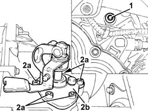
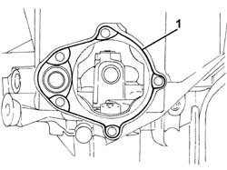
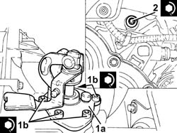
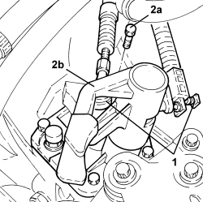

2110C50 GEAR SELECTION AND ENGAGEMENT UNIT - R R
- Path
- Procedures > 21 GEARBOX UNIT > 2110 MANUAL GEARBOX WITH DIFFERENTIAL > 2110C GEAR CASES AND COVERS FOR MANUAL GEARBOX WITH DIFFERENTIAL > 2110C50 GEAR SELECTION AND ENGAGEMENT UNIT - R R
- Kind
- repair procedure (removal / refitting; the operation number is the code)
- Applies to
- engines: 1.8, 2.2, 1.9 JTD 8v, 1.9 JTD 16v; all production periods
- Interactive page
- https://sloeber94.github.io/elrnDB-fCrm/en/#/194000448
Applies to: engines: 2.2; all production periods
 Removing
Removing
 Refitting
RefittingOp. 5530B52 BATTERY SUPPORT/DRIP TRAY - R.R
Op. 2125C31 GEAR SELECTION/ENGAGEMENT CABLES REACTION BRACKET - R.R.
1. Unscrew the bolt with the reduced threaded shank.
2. Undo the bolts (2a) and remove the gear selection and engagement unit (2b).

Applies to: engines: 2.2; all production periods
Refitting
Removing- Clean traces of adhesive paste off the mating surfaces.
1. Apply a thin layer of adhesive paste to the gear selection and engagement unit mating surface.

Applies to: engines: 2.2; all production periods
1. Refit gear selection and engagement unit (1a) and secure by tightenign bolts (1b) to the specified torque in crossover order.
Component | Fastening | dia | Value (daNm) | Validity |
|---|---|---|---|---|
Gear selection and engagement assembly | Upper bolts | - | (gearbox side) 2.5 | 2.2 |
2. Tighten the bolt with the reduced threaded shank to the specified torque.
Component | Fastening | dia | Value (daNm) | Validity |
|---|---|---|---|---|
Gear selection and engagement assembly | Side bolt | - | (gearbox side) 2.5 | 2.2 |

Applies to: engines: 2.2; all production periods
Op. 2125C31 GEAR SELECTION/ENGAGEMENT CABLES REACTION BRACKET - R.R.
Applies to: engines: 1.9 JTD 8v, 1.9 JTD 16v; all production periods
Removing
Refitting
Applies to: engines: 1.9 JTD 8v, 1.9 JTD 16v; all production periods

Applies to: engines: 1.8; all production periods
Removing
RefittingOp. 5530B52 BATTERY SUPPORT/DRIP TRAY - R.R
1. Disconnect the gear selector and engagement cables.
2. Undo the bolts (2a) and remove the gear selection and engagement unit (2b).
- Remove the gasket.

Applies to: engines: 1.8; all production periods
Refitting
Removing- Place the gear selection and engagement unit in position complete with a new gasket and tighten the bolts to the recommended torque.
- Connect the cables to the gear selector and engagement unit.